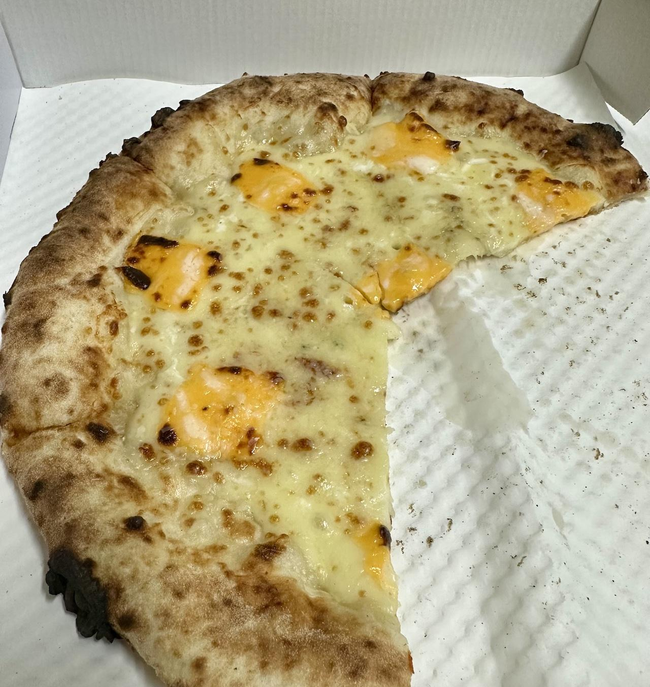
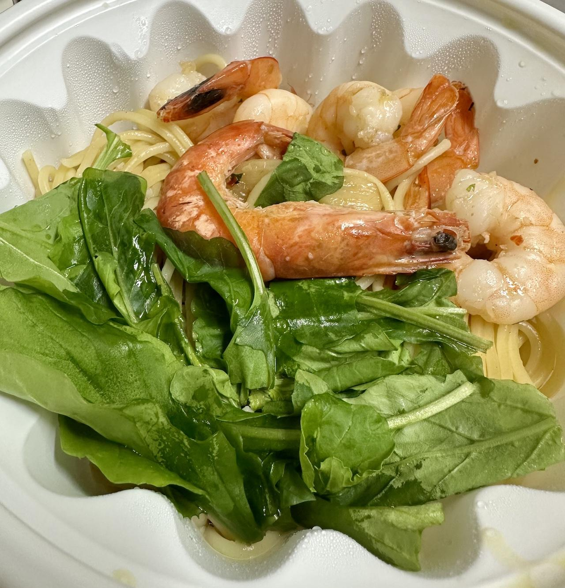

라마노 화덕피자&파스타의 꽈뜨로포르마지피자와 스파게티감베리에 관한 기록
가까운 옛날(?) 이탈리아 여행을 다녀오고 나서 생긴 이상한 증상(?)이 있다. 바로 이탈리아식 화덕피자가 종종 땡기는 증상이다. 그래서 종종 집 주변 화덕피자 가게를 찾아보고 시켜 먹어보곤 했다. 불행히도 대부분은 꽝이었다. 어떤 건 화덕에 구운 것 같긴 한데 미국 피자 맛이 났고, 어떤 곳은 이탈리아 피자를 화덕이 아닌 오븐에 구운 듯한 맛이었다. 이탈리아식 화덕피자에 대한 갈망이 컸기에 실망도 컸고 욕구불만(?)은 쌓여가기만 하고 있었다.
그러던 어느 날, 첫째가 갑자기 피자를 요구하며 익룡 소리를 내면서 저녁 밥을 거부하기 시작했다. 어떻게든 말로 설득을 시도했지만 공룡(?)에겐 말이 안 통하니 결국 포기했다. 그래서 배달앱을 통해 여기저기를 찾아보다 '라마노 화덕피자&파스타'라는 이름의 새로운 가게를 발견하여 여기서 제목 처럼 꽈뜨로포르마지피자와 스파게티감베리를 주문하고 먹어봤다. 참고로 매장은 구로디지털단지역 근처였는데 체인점은 아닌 것 같았다.
메뉴명이 띄어쓰기가 안 되어서 읽기 괴랄하지만 원문이 이러니 어쩔 수 없이 그대로 쓴다.
꽈뜨로포르마지피자
 먹히다 찍힌 꽈뜨로포르마지피자
꽈뜨로포르마지(quattro formaggi)피자는 번역하여 '네 가지 치즈 피자'다. 정말 모짜렐라, 고르곤졸라, 그라나빠나도, 체다의 네 가지 치즈가 들어간 화덕에서 구운 피자라고 한다. 참 있어보이는 이름이다.
이 피자의 비주얼은 정말 제대로 된 이탈리아식 화덕피자다. 그리고 인상을 한 마디로 정리하자면 '쫄깃하다'이다. 도우가 정말 쫄깃했는데 무슨 찹쌀떡을 반만 잘 익힌 건 같기도 한 식감이었다. 겉은 화덕에서 제대로 구운 비주얼과 맛이었는데 심지어 불맛이 느껴질 정도였다. 치즈와 쫄깃한 도우가 불맛과 함께 아주 하나로 잘 어울렸다.
무엇보다 가장 중요한 건 첫째가 잘 먹었다는 점이다. 이게 가장 중요하다.
스파게티감베리
 다행히도 아직 안 먹힌 스파게티감베리
스파게티감베리(spaghetti gamberi)는 번역하여 '새우 스파게티'다. 정말 직설적인 이름이지만 이탈리아어로 적으면 뭔가 있을 것 같은 느낌이기도 하다. 뭐 하여간 이름에 맞게 루꼴라와 새우가 들어간 오일 파스타다.
맛을 정리하자면 오일 파스타의 표준적인 맛이었다. 악평이 아니라 맛있었다는 말이다. 새우는 엔쵸비(아마도 이탈리아의 멸치젖갈?)로 간을 냈다는데 사실 엔쵸비 맛은 잘 모르겠지만 적당히 짭짤한게 맛있었다. 특히 새우 하나가 껍질이 안 까여진 채로 조리가 되어 있어서 설마 손으로 직접 껍질을 까는게 아닐까 하는 추측에 측은함(?)이 약간 들기도 했다.
단점으로 양이 좀 적었다. 물론 한국인이 좀 많이 먹긴 하지만 그래서 한국에서 밥 장사를 하려면 양은 충분해야 하지 않을까? 물론 맛있으니 이런 불평을 하는 것일 지도 모르겠다. 그밖에 루꼴라가 좀 썼다 정도가 있다.
참고로 첫째가 먹기엔 살짝 매운 맛이 있었다. 한국 성인에겐 별거 아닌 매운맛이지만 아이들에겐 어림 없었다.
결론
재주문할 생각은 충분하다. 동일 메뉴도 충분히 먹을 수 있겠지만 다음엔 다른 걸 먹어보고 싶다는 생각이 강하다. 특히 이탈리아 3색 국기색을 상징한다는 피자의 표준과도 같은 마르게리따 피자는 꼭 먹어봐야 할 듯하다. 어쨌든 간만에 제대로 된 화덕피자였다.
참고로 이 글을 읽을 때는 개인적으로 이탈리아빠라서 이탈리아 요리 자체를 선호하는 개인적인 특성을 간과하지 말아야 할 것 같다.
그나저나 가게 이름의 라마노(La MANO)는 번역하면 '손'이라는데 '손맛' 뭐 이런 느낌일까?